SignalP 4.1 Server - prediction resultsTechnical University of Denmark |
# SignalP-4.1 euk predictions >Scer_YBR093CPlease cite: SignalP 4.0: discriminating signal peptides from transmembrane regions Petersen TN., Brunak S., von Heijne G. & Nielsen H. Nature Methods, 8:785-786, 2011 Explain the output. Go back.# Measure Position Value Cutoff signal peptide? max. C 18 0.355 max. Y 18 0.433 max. S 15 0.690 mean S 1-17 0.545 D 1-17 0.494 0.450 YES Name=Scer_YBR093C SP='YES' Cleavage site between pos. 17 and 18: ANA-GT D=0.494 D-cutoff=0.450 Networks=SignalP-noTM # data # gnuplot script
>Scer_YDL024C 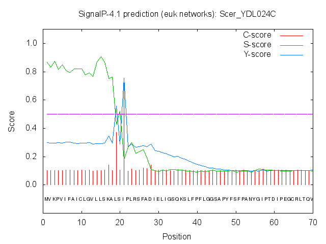# Measure Position Value Cutoff signal peptide? max. C 21 0.721 max. Y 21 0.757 max. S 15 0.906 mean S 1-20 0.787 D 1-20 0.773 0.450 YES Name=Scer_YDL024C SP='YES' Cleavage site between pos. 20 and 21: ALS-IP D=0.773 D-cutoff=0.450 Networks=SignalP-noTM # data # gnuplot script
>Scer_YBR092C 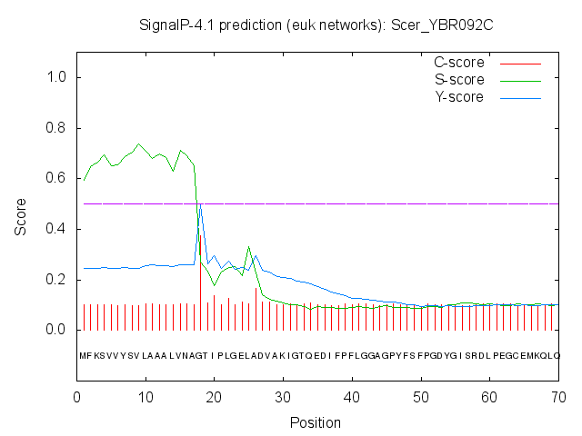# Measure Position Value Cutoff signal peptide? max. C 18 0.373 max. Y 18 0.495 max. S 9 0.738 mean S 1-17 0.676 D 1-17 0.592 0.450 YES Name=Scer_YBR092C SP='YES' Cleavage site between pos. 17 and 18: VNA-GT D=0.592 D-cutoff=0.450 Networks=SignalP-noTM # data # gnuplot script
>Scer_YHR215W# Measure Position Value Cutoff signal peptide? max. C 18 0.435 max. Y 18 0.460 max. S 16 0.591 mean S 1-17 0.490 D 1-17 0.476 0.450 YES Name=Scer_YHR215W SP='YES' Cleavage site between pos. 17 and 18: VNA-GT D=0.476 D-cutoff=0.450 Networks=SignalP-noTM # data # gnuplot script
>Scer_YAR071W 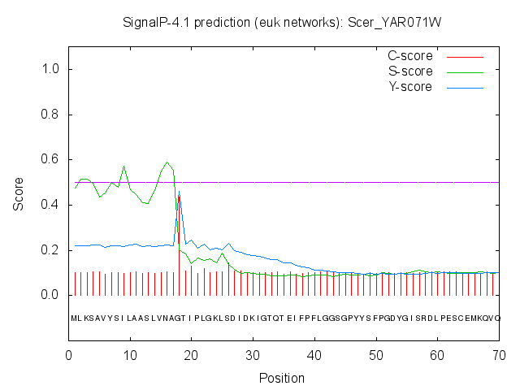# Measure Position Value Cutoff signal peptide? max. C 18 0.435 max. Y 18 0.460 max. S 16 0.591 mean S 1-17 0.490 D 1-17 0.476 0.450 YES Name=Scer_YAR071W SP='YES' Cleavage site between pos. 17 and 18: VNA-GT D=0.476 D-cutoff=0.450 Networks=SignalP-noTM # data # gnuplot script
>Smik_2.233 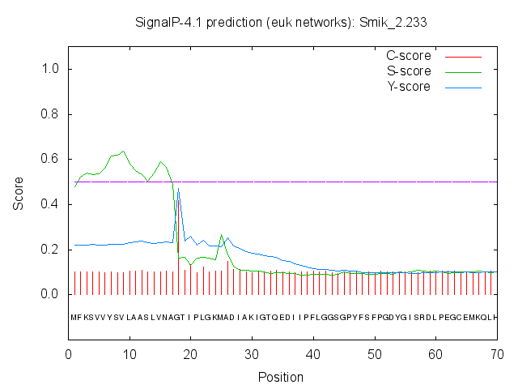# Measure Position Value Cutoff signal peptide? max. C 18 0.416 max. Y 18 0.472 max. S 9 0.638 mean S 1-17 0.552 D 1-17 0.515 0.450 YES Name=Smik_2.233 SP='YES' Cleavage site between pos. 17 and 18: VNA-GT D=0.515 D-cutoff=0.450 Networks=SignalP-noTM # data # gnuplot script
>Smik_2.234 _PHO5-g5_# Measure Position Value Cutoff signal peptide? max. C 18 0.415 max. Y 18 0.473 max. S 9 0.641 mean S 1-17 0.556 D 1-17 0.518 0.450 YES Name=Smik_2.234 SP='YES' Cleavage site between pos. 17 and 18: VNA-GT D=0.518 D-cutoff=0.450 Networks=SignalP-noTM # data # gnuplot script
>Smik_2.235 _PHO5-g4_ 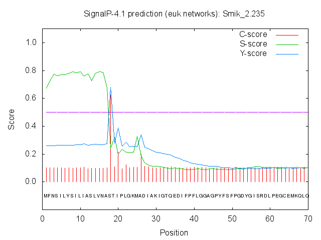# Measure Position Value Cutoff signal peptide? max. C 18 0.622 max. Y 18 0.679 max. S 8 0.792 mean S 1-17 0.760 D 1-17 0.723 0.450 YES Name=Smik_2.235 SP='YES' Cleavage site between pos. 17 and 18: VNA-ST D=0.723 D-cutoff=0.450 Networks=SignalP-noTM # data # gnuplot script
>Spar_2.251# Measure Position Value Cutoff signal peptide? max. C 18 0.373 max. Y 18 0.497 max. S 9 0.742 mean S 1-17 0.680 D 1-17 0.596 0.450 YES Name=Spar_2.251 SP='YES' Cleavage site between pos. 17 and 18: VNA-GT D=0.596 D-cutoff=0.450 Networks=SignalP-noTM # data # gnuplot script
>Spar_4.254 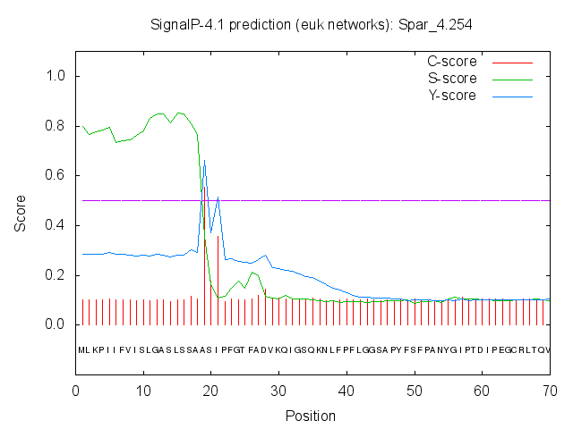# Measure Position Value Cutoff signal peptide? max. C 19 0.554 max. Y 19 0.663 max. S 15 0.854 mean S 1-18 0.795 D 1-18 0.734 0.450 YES Name=Spar_4.254 SP='YES' Cleavage site between pos. 18 and 19: SSA-AS D=0.734 D-cutoff=0.450 Networks=SignalP-noTM # data # gnuplot script
>Spar_8.343 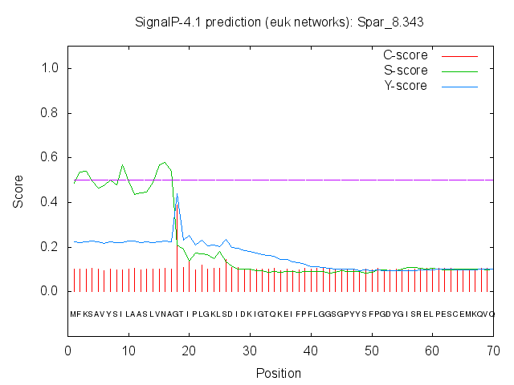# Measure Position Value Cutoff signal peptide? max. C 18 0.390 max. Y 18 0.441 max. S 16 0.581 mean S 1-17 0.503 D 1-17 0.474 0.450 YES Name=Spar_8.343 SP='YES' Cleavage site between pos. 17 and 18: VNA-GT D=0.474 D-cutoff=0.450 Networks=SignalP-noTM # data # gnuplot script
>Sbay_sbayc678-g120.1# Measure Position Value Cutoff signal peptide? max. C 18 0.484 max. Y 18 0.585 max. S 2 0.768 mean S 1-17 0.696 D 1-17 0.645 0.450 YES Name=Sbay_sbayc678-g120.1 SP='YES' Cleavage site between pos. 17 and 18: VNA-GT D=0.645 D-cutoff=0.450 Networks=SignalP-noTM # data # gnuplot script
>Sbay_sbayc542-g1.1 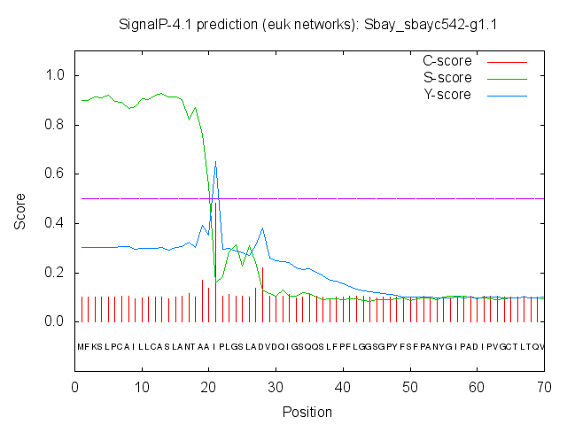# Measure Position Value Cutoff signal peptide? max. C 21 0.483 max. Y 21 0.650 max. S 13 0.928 mean S 1-20 0.873 D 1-20 0.770 0.450 YES Name=Sbay_sbayc542-g1.1 SP='YES' Cleavage site between pos. 20 and 21: TAA-IP D=0.770 D-cutoff=0.450 Networks=SignalP-noTM # data # gnuplot script
>Sbay_sbayc678-g121.1 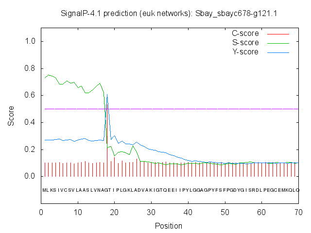# Measure Position Value Cutoff signal peptide? max. C 18 0.532 max. Y 18 0.607 max. S 2 0.753 mean S 1-17 0.683 D 1-17 0.648 0.450 YES Name=Sbay_sbayc678-g121.1 SP='YES' Cleavage site between pos. 17 and 18: VNA-GT D=0.648 D-cutoff=0.450 Networks=SignalP-noTM # data # gnuplot script
>Sbay_sbayc640-g2.1 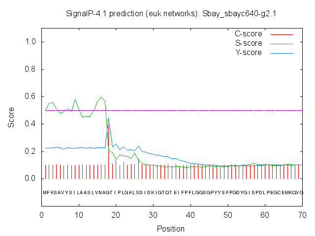# Measure Position Value Cutoff signal peptide? max. C 18 0.391 max. Y 18 0.448 max. S 16 0.597 mean S 1-17 0.516 D 1-17 0.485 0.450 YES Name=Sbay_sbayc640-g2.1 SP='YES' Cleavage site between pos. 17 and 18: VNA-GT D=0.485 D-cutoff=0.450 Networks=SignalP-noTM # data # gnuplot script
>Lwal_LAWA0G12574g 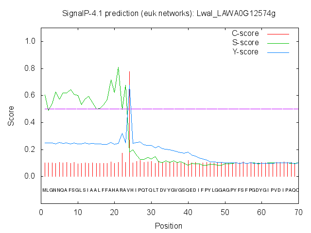# Measure Position Value Cutoff signal peptide? max. C 24 0.775 max. Y 24 0.676 max. S 21 0.809 mean S 1-23 0.591 D 1-23 0.630 0.450 YES Name=Lwal_LAWA0G12574g SP='YES' Cleavage site between pos. 23 and 24: ARA-VH D=0.630 D-cutoff=0.450 Networks=SignalP-noTM # data # gnuplot script
>Lwal_LAWA0H00716g 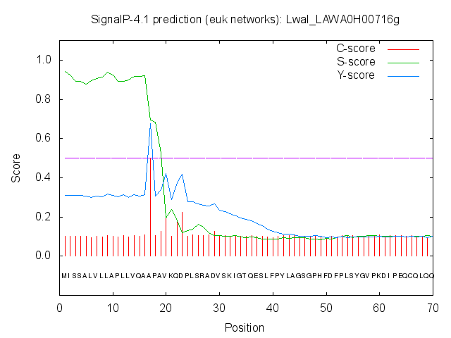# Measure Position Value Cutoff signal peptide? max. C 17 0.496 max. Y 17 0.675 max. S 1 0.941 mean S 1-16 0.909 D 1-16 0.801 0.450 YES Name=Lwal_LAWA0H00716g SP='YES' Cleavage site between pos. 16 and 17: VQA-AP D=0.801 D-cutoff=0.450 Networks=SignalP-noTM # data # gnuplot script
>Lwal_LAWA0B00496g 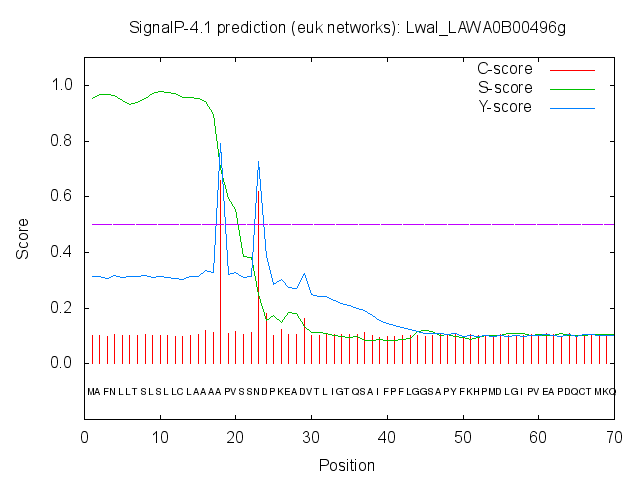# Measure Position Value Cutoff signal peptide? max. C 18 0.657 max. Y 18 0.792 max. S 10 0.979 mean S 1-17 0.953 D 1-17 0.879 0.450 YES Name=Lwal_LAWA0B00496g SP='YES' Cleavage site between pos. 17 and 18: AAA-AP D=0.879 D-cutoff=0.450 Networks=SignalP-noTM # data # gnuplot script
>Klac_KLLA0C19338g 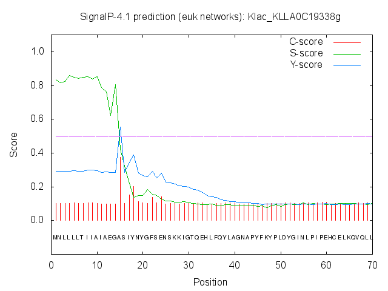# Measure Position Value Cutoff signal peptide? max. C 15 0.373 max. Y 15 0.554 max. S 4 0.859 mean S 1-14 0.814 D 1-14 0.694 0.450 YES Name=Klac_KLLA0C19338g SP='YES' Cleavage site between pos. 14 and 15: AEG-AS D=0.694 D-cutoff=0.450 Networks=SignalP-noTM # data # gnuplot script
>Klac_KLLA0B00286g 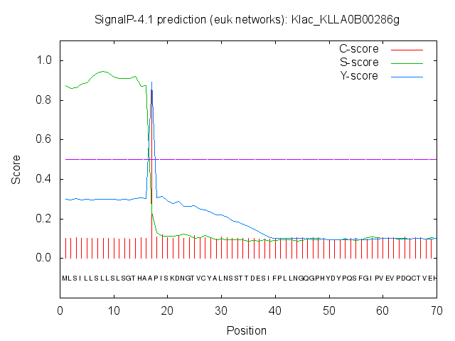# Measure Position Value Cutoff signal peptide? max. C 17 0.887 max. Y 17 0.890 max. S 8 0.945 mean S 1-16 0.901 D 1-16 0.896 0.450 YES Name=Klac_KLLA0B00286g SP='YES' Cleavage site between pos. 16 and 17: THA-AP D=0.896 D-cutoff=0.450 Networks=SignalP-noTM # data # gnuplot script
>Klac_KLLA0A00176g 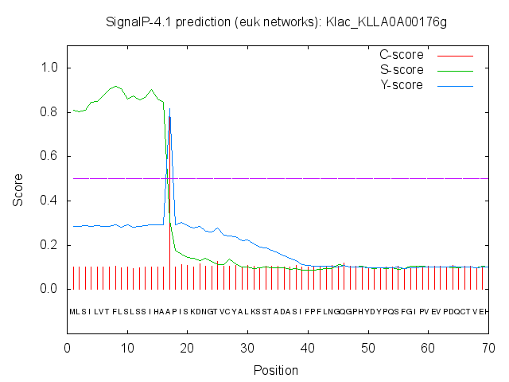# Measure Position Value Cutoff signal peptide? max. C 17 0.791 max. Y 17 0.818 max. S 8 0.917 mean S 1-16 0.861 D 1-16 0.841 0.450 YES Name=Klac_KLLA0A00176g SP='YES' Cleavage site between pos. 16 and 17: IHA-AP D=0.841 D-cutoff=0.450 Networks=SignalP-noTM # data # gnuplot script
>Klac_KLLA0D00258g 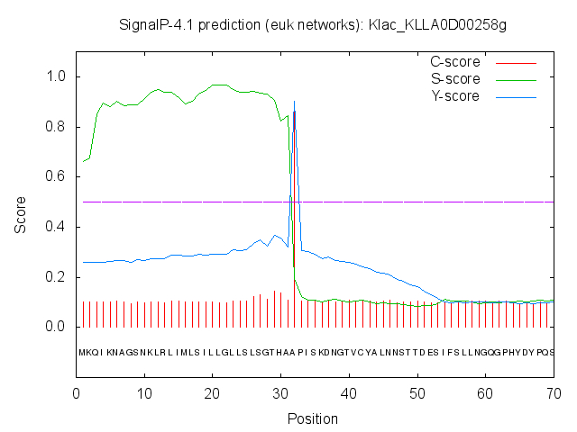# Measure Position Value Cutoff signal peptide? max. C 32 0.879 max. Y 32 0.902 max. S 20 0.968 mean S 1-31 0.900 D 1-31 0.901 0.450 YES Name=Klac_KLLA0D00258g SP='YES' Cleavage site between pos. 31 and 32: THA-AP D=0.901 D-cutoff=0.450 Networks=SignalP-noTM # data # gnuplot script
>Klac_KLLA0E24949g 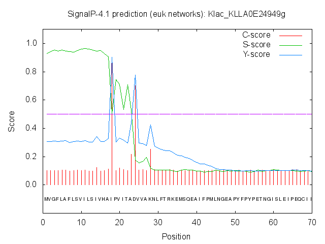# Measure Position Value Cutoff signal peptide? max. C 18 0.867 max. Y 18 0.903 max. S 11 0.965 mean S 1-17 0.945 D 1-17 0.925 0.450 YES Name=Klac_KLLA0E24949g SP='YES' Cleavage site between pos. 17 and 18: VHA-IP D=0.925 D-cutoff=0.450 Networks=SignalP-noTM # data # gnuplot script
>Lklu_SAKL0G17028g 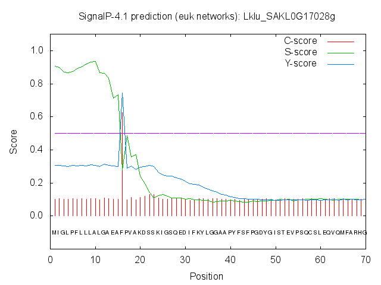# Measure Position Value Cutoff signal peptide? max. C 16 0.627 max. Y 16 0.743 max. S 10 0.934 mean S 1-15 0.867 D 1-15 0.810 0.450 YES Name=Lklu_SAKL0G17028g SP='YES' Cleavage site between pos. 15 and 16: AEA-FP D=0.810 D-cutoff=0.450 Networks=SignalP-noTM # data # gnuplot script
>Lklu_SAKL0B07678g 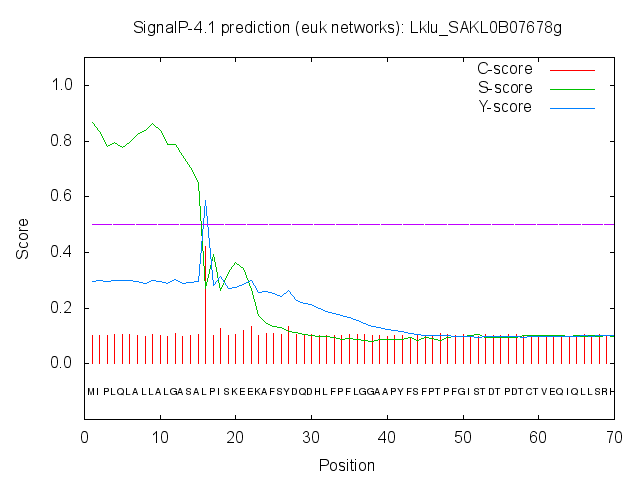# Measure Position Value Cutoff signal peptide? max. C 16 0.422 max. Y 16 0.587 max. S 1 0.867 mean S 1-15 0.792 D 1-15 0.698 0.450 YES Name=Lklu_SAKL0B07678g SP='YES' Cleavage site between pos. 15 and 16: ASA-LP D=0.698 D-cutoff=0.450 Networks=SignalP-noTM # data # gnuplot script
>Clus_CLUG04585 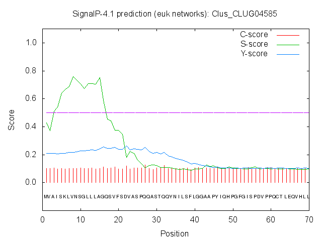# Measure Position Value Cutoff signal peptide? max. C 27 0.127 max. Y 22 0.263 max. S 8 0.759 mean S 1-21 0.580 D 1-21 0.434 0.450 NO Name=Clus_CLUG04585 SP='NO' D=0.434 D-cutoff=0.450 Networks=SignalP-noTM # data # gnuplot script
>Dhan_DEHA2C08580g 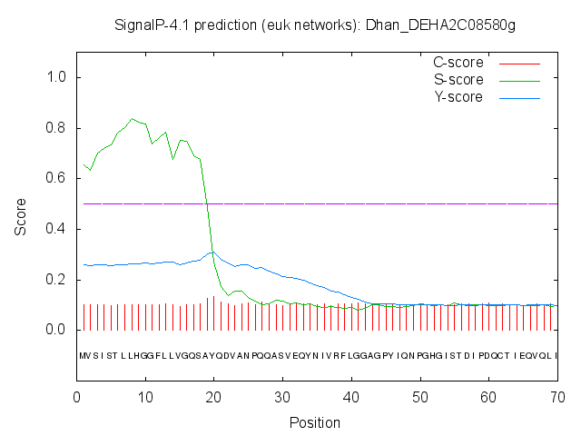# Measure Position Value Cutoff signal peptide? max. C 20 0.134 max. Y 20 0.310 max. S 8 0.839 mean S 1-19 0.727 D 1-19 0.535 0.450 YES Name=Dhan_DEHA2C08580g SP='YES' Cleavage site between pos. 19 and 20: QSA-YQ D=0.535 D-cutoff=0.450 Networks=SignalP-noTM # data # gnuplot script
>Dhan_DEHA2F07700g 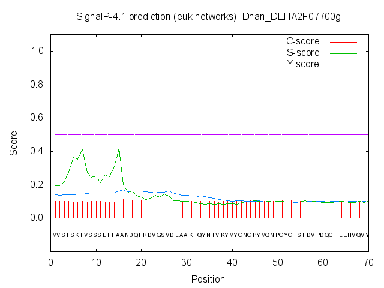# Measure Position Value Cutoff signal peptide? max. C 26 0.117 max. Y 16 0.171 max. S 15 0.416 mean S 1-15 0.282 D 1-15 0.231 0.450 NO Name=Dhan_DEHA2F07700g SP='NO' D=0.231 D-cutoff=0.450 Networks=SignalP-noTM # data # gnuplot script
>Dhan_DEHA2F07722g 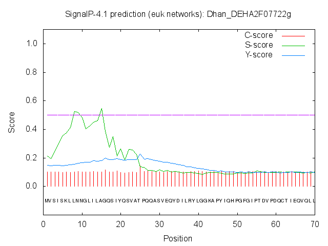# Measure Position Value Cutoff signal peptide? max. C 25 0.144 max. Y 25 0.228 max. S 15 0.547 mean S 1-24 0.347 D 1-24 0.292 0.450 NO Name=Dhan_DEHA2F07722g SP='NO' D=0.292 D-cutoff=0.450 Networks=SignalP-noTM # data # gnuplot script
>Cgui_PGUG01443.1 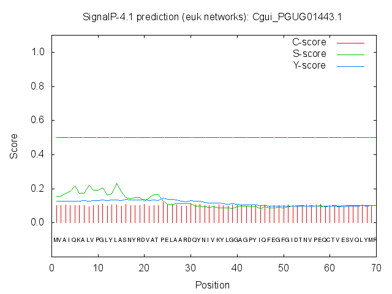# Measure Position Value Cutoff signal peptide? max. C 24 0.120 max. Y 24 0.144 max. S 14 0.230 mean S 1-23 0.173 D 1-23 0.160 0.450 NO Name=Cgui_PGUG01443.1 SP='NO' D=0.160 D-cutoff=0.450 Networks=SignalP-noTM # data # gnuplot script
>Ctro_CTRG00898.3 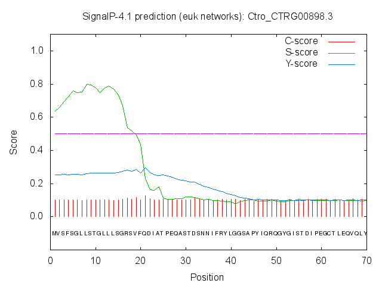# Measure Position Value Cutoff signal peptide? max. C 21 0.127 max. Y 21 0.295 max. S 8 0.800 mean S 1-20 0.691 D 1-20 0.508 0.450 YES Name=Ctro_CTRG00898.3 SP='YES' Cleavage site between pos. 20 and 21: SVF-QD D=0.508 D-cutoff=0.450 Networks=SignalP-noTM # data # gnuplot script
>Ctro_CTRG00134.3 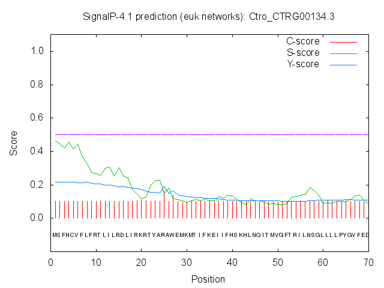# Measure Position Value Cutoff signal peptide? max. C 25 0.162 max. Y 11 0.206 max. S 1 0.463 mean S 1-10 0.387 D 1-10 0.279 0.500 NO Name=Ctro_CTRG00134.3 SP='NO' D=0.279 D-cutoff=0.500 Networks=SignalP-TM # data # gnuplot script
>Ctro_CTRG00890.3 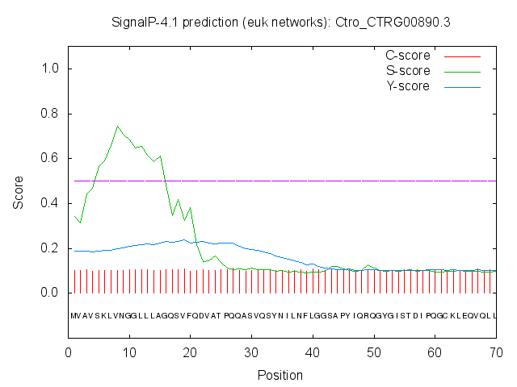# Measure Position Value Cutoff signal peptide? max. C 27 0.111 max. Y 19 0.237 max. S 8 0.744 mean S 1-18 0.549 D 1-18 0.405 0.450 NO Name=Ctro_CTRG00890.3 SP='NO' D=0.405 D-cutoff=0.450 Networks=SignalP-noTM # data # gnuplot script
>Ctro_CTRG00902.3# Measure Position Value Cutoff signal peptide? max. C 27 0.111 max. Y 16 0.252 max. S 8 0.769 mean S 1-15 0.651 D 1-15 0.467 0.450 YES Name=Ctro_CTRG00902.3 SP='YES' Cleavage site between pos. 15 and 16: LLA-GQ D=0.467 D-cutoff=0.450 Networks=SignalP-noTM # data # gnuplot script
>Calb_orf19.4584 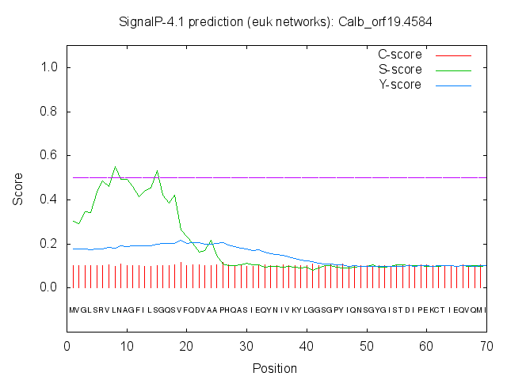# Measure Position Value Cutoff signal peptide? max. C 19 0.117 max. Y 19 0.218 max. S 8 0.552 mean S 1-18 0.429 D 1-18 0.332 0.450 NO Name=Calb_orf19.4584 SP='NO' D=0.332 D-cutoff=0.450 Networks=SignalP-noTM # data # gnuplot script
>Calb_orf19.3727 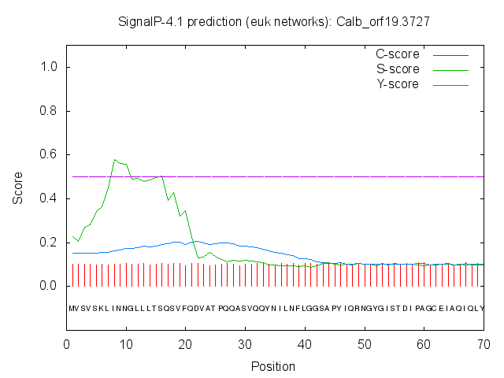# Measure Position Value Cutoff signal peptide? max. C 67 0.109 max. Y 22 0.206 max. S 8 0.578 mean S 1-21 0.405 D 1-21 0.313 0.450 NO Name=Calb_orf19.3727 SP='NO' D=0.313 D-cutoff=0.450 Networks=SignalP-noTM # data # gnuplot script
>Calb_orf19.2619# Measure Position Value Cutoff signal peptide? max. C 27 0.110 max. Y 21 0.218 max. S 8 0.645 mean S 1-20 0.472 D 1-20 0.355 0.450 NO Name=Calb_orf19.2619 SP='NO' D=0.355 D-cutoff=0.450 Networks=SignalP-noTM # data # gnuplot script
>Cpar_CPAG03210 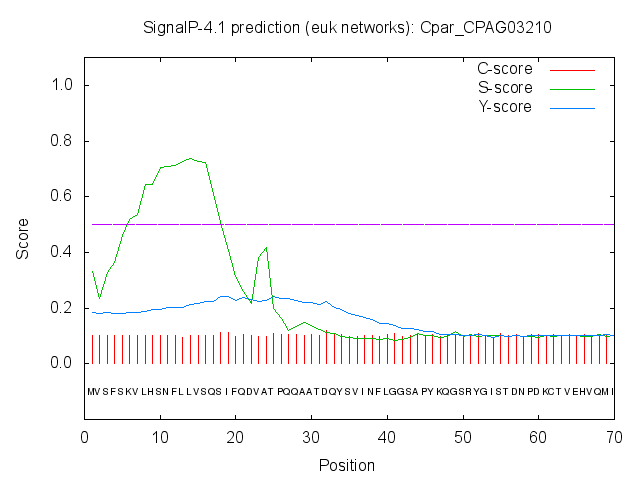# Measure Position Value Cutoff signal peptide? max. C 32 0.118 max. Y 19 0.243 max. S 14 0.739 mean S 1-18 0.568 D 1-18 0.418 0.450 NO Name=Cpar_CPAG03210 SP='NO' D=0.418 D-cutoff=0.450 Networks=SignalP-noTM # data # gnuplot script
>Cpar_CPAG04424 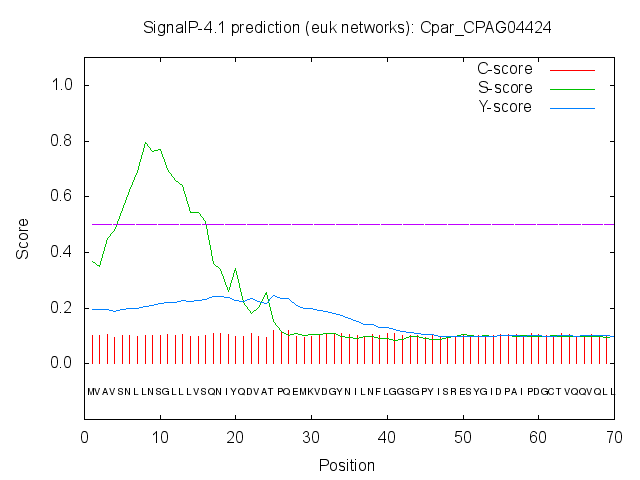# Measure Position Value Cutoff signal peptide? max. C 25 0.121 max. Y 25 0.245 max. S 8 0.795 mean S 1-24 0.483 D 1-24 0.374 0.450 NO Name=Cpar_CPAG04424 SP='NO' D=0.374 D-cutoff=0.450 Networks=SignalP-noTM # data # gnuplot script
>Lelo_LELG00124 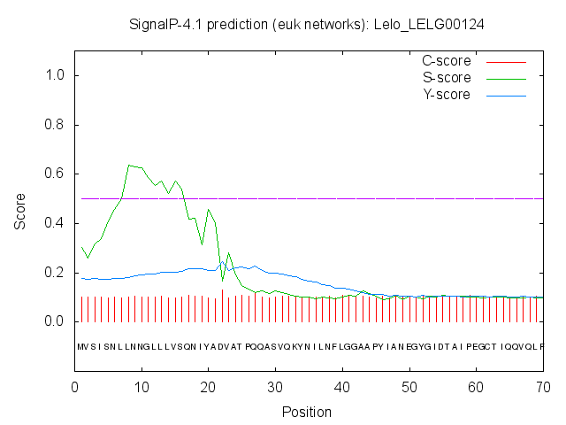# Measure Position Value Cutoff signal peptide? max. C 22 0.129 max. Y 22 0.244 max. S 8 0.638 mean S 1-21 0.469 D 1-21 0.365 0.450 NO Name=Lelo_LELG00124 SP='NO' D=0.365 D-cutoff=0.450 Networks=SignalP-noTM # data # gnuplot script
>Lelo_LELG05800 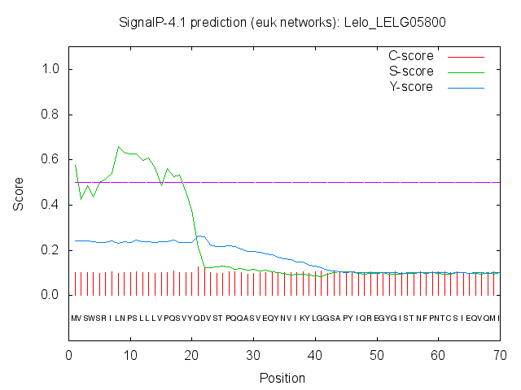# Measure Position Value Cutoff signal peptide? max. C 21 0.127 max. Y 21 0.262 max. S 8 0.657 mean S 1-20 0.536 D 1-20 0.410 0.450 NO Name=Lelo_LELG05800 SP='NO' D=0.410 D-cutoff=0.450 Networks=SignalP-noTM # data # gnuplot script
>Ylip_YALI0C06930g 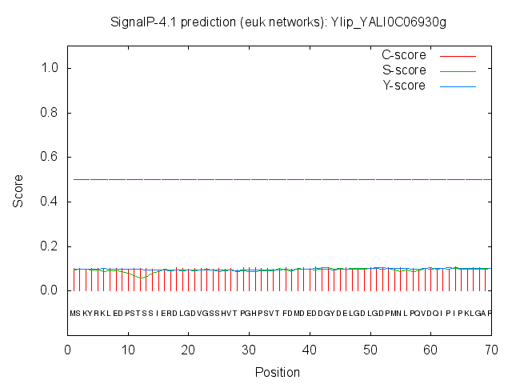# Measure Position Value Cutoff signal peptide? max. C 64 0.110 max. Y 64 0.105 max. S 63 0.106 mean S 1-63 0.093 D 1-63 0.099 0.450 NO Name=Ylip_YALI0C06930g SP='NO' D=0.099 D-cutoff=0.450 Networks=SignalP-noTM # data # gnuplot script
>Sjap_SJAG01970 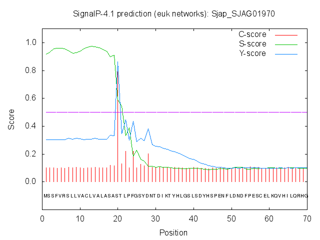# Measure Position Value Cutoff signal peptide? max. C 20 0.790 max. Y 20 0.862 max. S 13 0.976 mean S 1-19 0.945 D 1-19 0.907 0.450 YES Name=Sjap_SJAG01970 SP='YES' Cleavage site between pos. 19 and 20: ASA-ST D=0.907 D-cutoff=0.450 Networks=SignalP-noTM # data # gnuplot script
>Sjap_SJAG04067 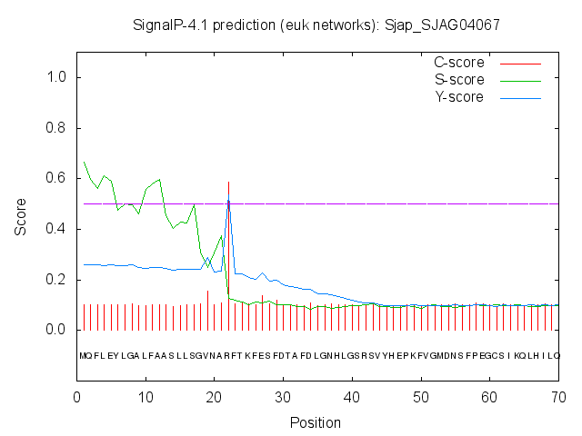# Measure Position Value Cutoff signal peptide? max. C 22 0.585 max. Y 22 0.536 max. S 1 0.664 mean S 1-21 0.483 D 1-21 0.507 0.450 YES Name=Sjap_SJAG04067 SP='YES' Cleavage site between pos. 21 and 22: VNA-RF D=0.507 D-cutoff=0.450 Networks=SignalP-noTM # data # gnuplot script
>Soct_SOCG04697 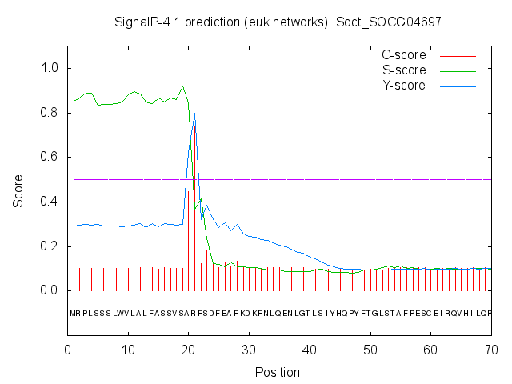# Measure Position Value Cutoff signal peptide? max. C 21 0.739 max. Y 21 0.798 max. S 19 0.920 mean S 1-20 0.862 D 1-20 0.833 0.450 YES Name=Soct_SOCG04697 SP='YES' Cleavage site between pos. 20 and 21: VSA-RF D=0.833 D-cutoff=0.450 Networks=SignalP-noTM # data # gnuplot script
>Soct_SOCG00661 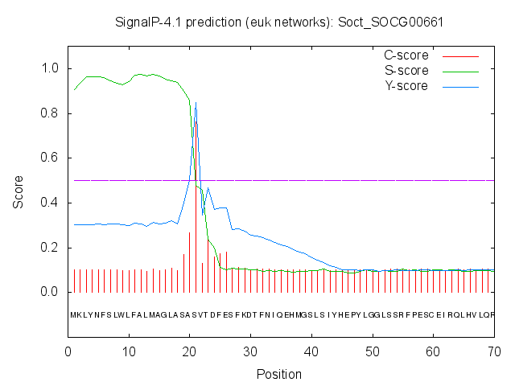# Measure Position Value Cutoff signal peptide? max. C 21 0.762 max. Y 21 0.847 max. S 12 0.976 mean S 1-20 0.945 D 1-20 0.900 0.450 YES Name=Soct_SOCG00661 SP='YES' Cleavage site between pos. 20 and 21: ASA-SV D=0.900 D-cutoff=0.450 Networks=SignalP-noTM # data # gnuplot script
>Spom_SPBP4G3.02 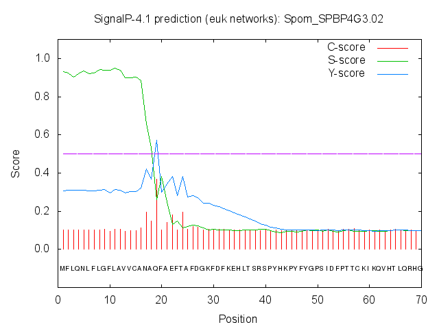# Measure Position Value Cutoff signal peptide? max. C 19 0.367 max. Y 19 0.573 max. S 11 0.948 mean S 1-18 0.885 D 1-18 0.742 0.450 YES Name=Spom_SPBP4G3.02 SP='YES' Cleavage site between pos. 18 and 19: ANA-QF D=0.742 D-cutoff=0.450 Networks=SignalP-noTM # data # gnuplot script
>Spom_SPBC21H7.03c 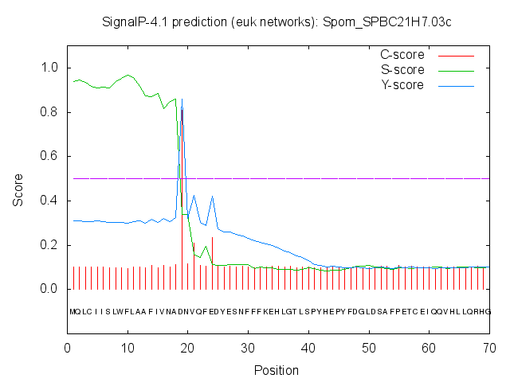# Measure Position Value Cutoff signal peptide? max. C 19 0.810 max. Y 19 0.860 max. S 10 0.968 mean S 1-18 0.908 D 1-18 0.886 0.450 YES Name=Spom_SPBC21H7.03c SP='YES' Cleavage site between pos. 18 and 19: VNA-DN D=0.886 D-cutoff=0.450 Networks=SignalP-noTM # data # gnuplot script
>Spom_SPBC428.03c 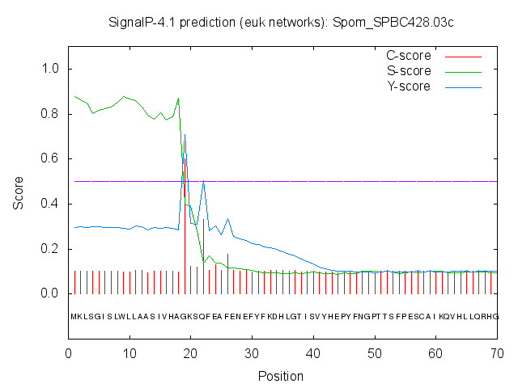# Measure Position Value Cutoff signal peptide? max. C 19 0.601 max. Y 19 0.710 max. S 9 0.876 mean S 1-18 0.830 D 1-18 0.775 0.450 YES Name=Spom_SPBC428.03c SP='YES' Cleavage site between pos. 18 and 19: VHA-GK D=0.775 D-cutoff=0.450 Networks=SignalP-noTM # data # gnuplot script
Signal peptides: 35 # processed fasta entries # gff file of processed entries